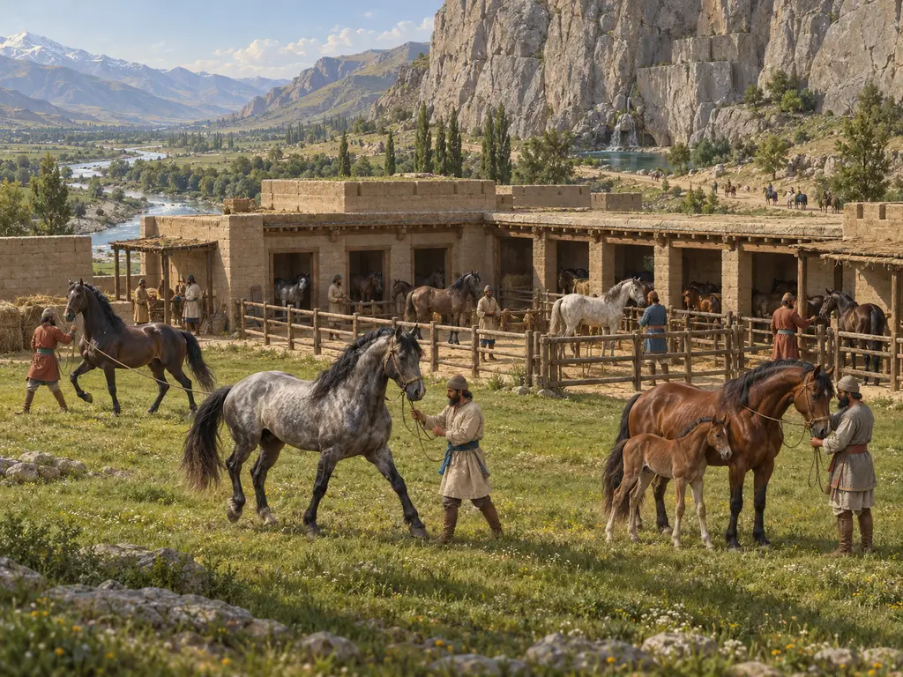
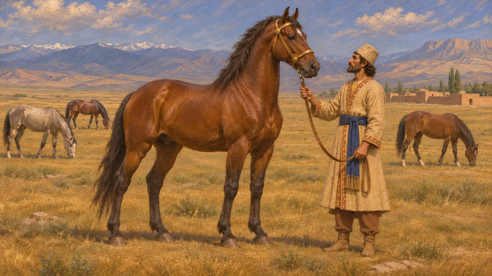
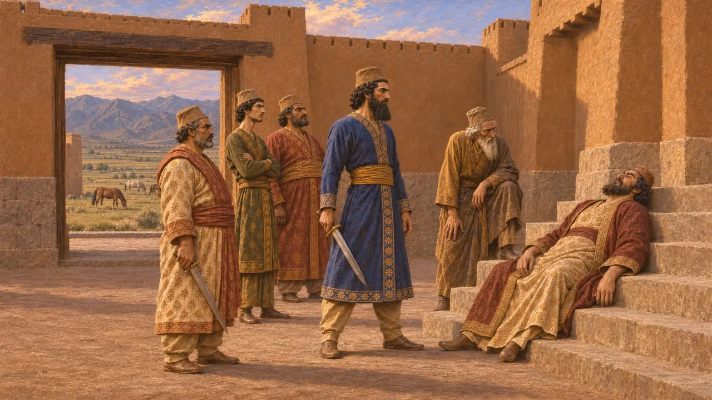
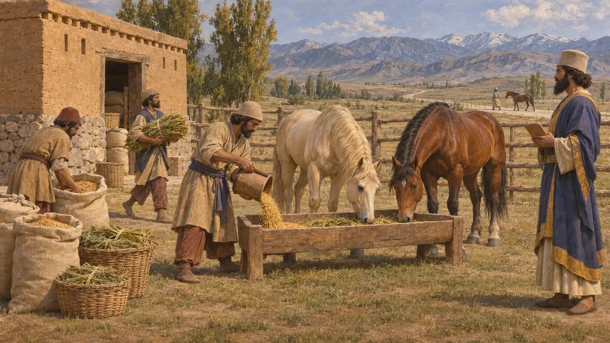
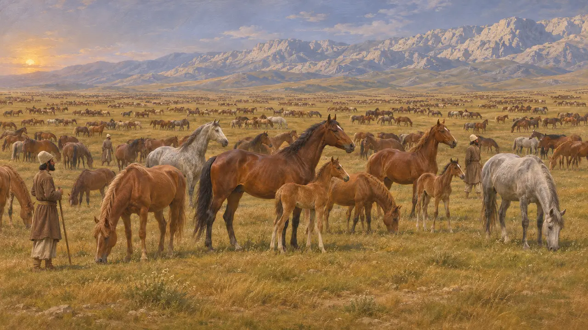
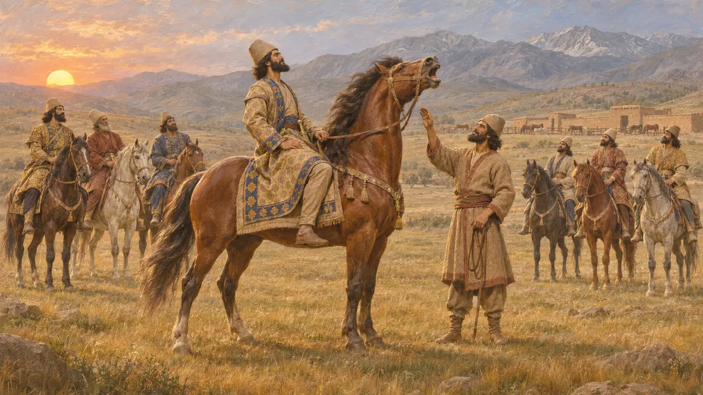

메디아의 니사이아 평원은 페르시아 제국에서 가장 크고 귀한 말을 길러 냈습니다. 그리스 저술가들은 이 말들을 왕과 귀족이 타는 말이자 신의 전차 앞에 끌려가는 신성한 말로 묘사합니다. 이 평원은 대개 메디아의 자그로스 산지 계곡, 아마도 바가스타나 근처로 비정되며, 기원전 522년에 다리우스와 소수의 동료가 그가 가우마타라 부른 자를 죽인 곳과 가깝습니다.
게임에서: 마부들이 바가스타나의 비옥한 초원에서 말을 기르며, 기병 마구간에서 훈련하는 기병마다 한 필씩 필요하다. 이는 역사를 단순화한 것이다. 니사이아 말은 귀하게 여겨진 왕실의 승용마였고, 기병의 말은 다른 말 떼와 공물에서도 충당되었다.

메디아의 거대한 말
고대의 전승헤로도토스에 따르면 니사이아 말은 매우 큰 말을 길러 내던 메디아의 넓은 평원에서 이름을 따왔다. 그는 기원전 480년 크세르크세스의 행군에서 신성한 니사이아 말 10필이 제우스의 전차 앞에 섰고, 크세르크세스는 니사이아 말이 끄는 전차를 타고 그 뒤를 따랐다고 전한다. 또한 그는 이 말들을 인도의 말보다 윗길로 치며, 페르시아 기병 사령관 마시스티오스가 플라타이아에서 금 굴레를 씌운 니사이아 말을 탔다고 한다.
Herodotus 7.40; Herodotus 3.106; Herodotus 9.20

왕이 직접 전하는 니사야
당대 기록베히스툰 비문에서 다리우스는 자신과 몇몇 사람이 메디아의 니사야라는 지역에 있는 시카야우바티 요새에서 가우마타를 죽였다고 말한다. 많은 역사가들은 이 지역을 그리스 저술가들이 말한 니사이아 평원과 연결 짓는다. 그들의 말이 옳다면, 왕실의 말 산지는 다리우스가 권력을 장악한 현장 바로 가까이에 있었던 셈이다.
DB §13

대왕의 말 먹이기
당대 기록페르세폴리스 성채 서판은 대략 기원전 509년에서 493년 사이에 엘람어로 작성되었다. 서판에는 말에게 지급된 곡물과 사료가 기록되어 있으며, 그중에는 왕이 소유한 말과 왕실 도로를 오가는 여행자들이 쓰던 말도 있다. 이를 통해 말이 왕실 경제의 창고에서 정기적으로 지출되는 항목이었고, 이름이 밝혀진 관리들이 그 지급과 회계를 맡았음을 알 수 있다.
R. Hallock, Persepolis Fortification Tablets, 1969; P. Briant, From Cyrus to Alexander, 2002

평원은 어디에 있었고 가축 떼는 얼마나 컸나
분쟁 중후대의 저술가들은 엄청난 규모의 말 떼를 전한다. 아리아노스는 알렉산드로스가 니사이아 평원에서 찾아낸 암말이 5만 마리 남짓에 불과했으며, 한때는 약 15만 마리가 있었다고 말한다. 디오도로스는 바기스타네 인근의 목초지에 관해 쓰면서 예전에는 16만 마리, 알렉산드로스 시대에는 6만 마리였다고 전한다. 스트라본은 이 품종의 기원을 아르메니아로 보는 이들도 있었다고 적는다. 역사가들은 이 평원의 위치를 두고 아직 논쟁 중이며, 이러한 수치를 신중하게 다룬다.
Arrian, Anabasis 7.13; Diodorus 17.110; Strabo 11.13.7

다리우스와 우는 말
후대의 전설헤로도토스에 따르면 일곱 공모자는 해 뜰 무렵 말이 가장 먼저 우는 사람을 왕으로 삼기로 합의했다. 다리우스의 마부 오이바레스는 꾀를 써서 주인의 종마를 울게 했는데, 헤로도토스는 그 방법에 대해 두 가지 이야기를 전한다. 이는 다리우스가 왕이 된 경위를 기록한 것이 아니라 계략에 관한 그리스의 설화이며, 베히스툰 비문은 이에 대해 아무 말도 하지 않는다.
Herodotus 3.84-87
출처
- Herodotus, Histories 3.84-87, 3.106, 7.40, 9.20
- Darius, Behistun inscription (DB §13)
- R. Hallock, Persepolis Fortification Tablets, 1969
- Arrian, Anabasis 7.13; Diodorus 17.110
- Strabo, Geography 11.13.7
- P. Briant, From Cyrus to Alexander, 2002